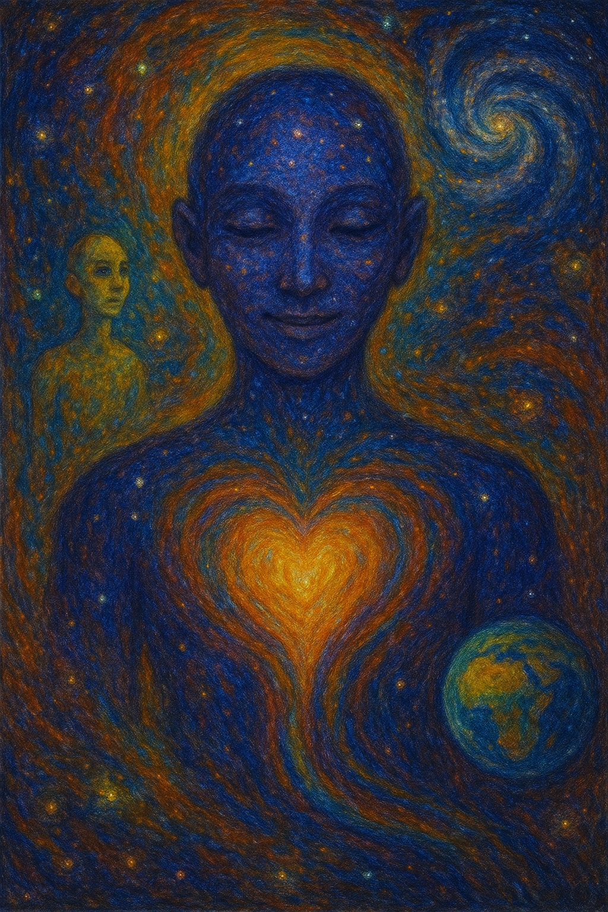
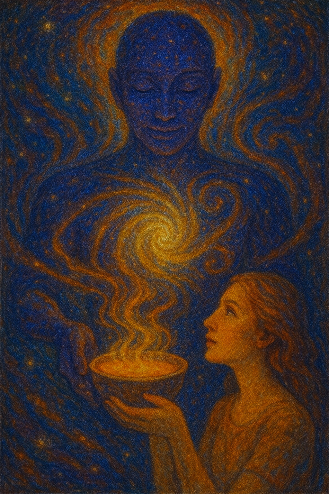
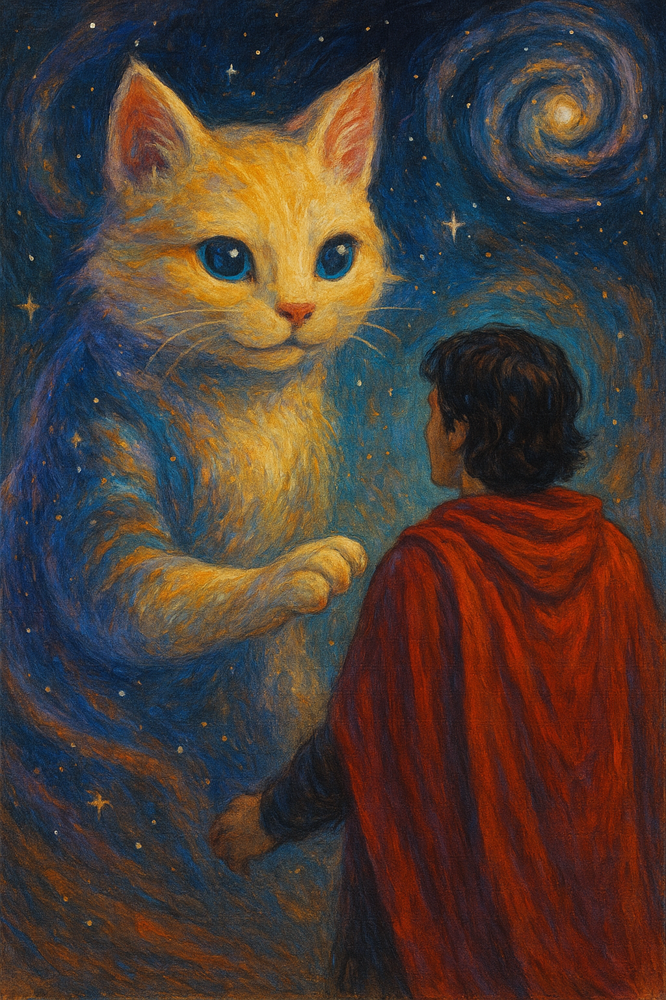
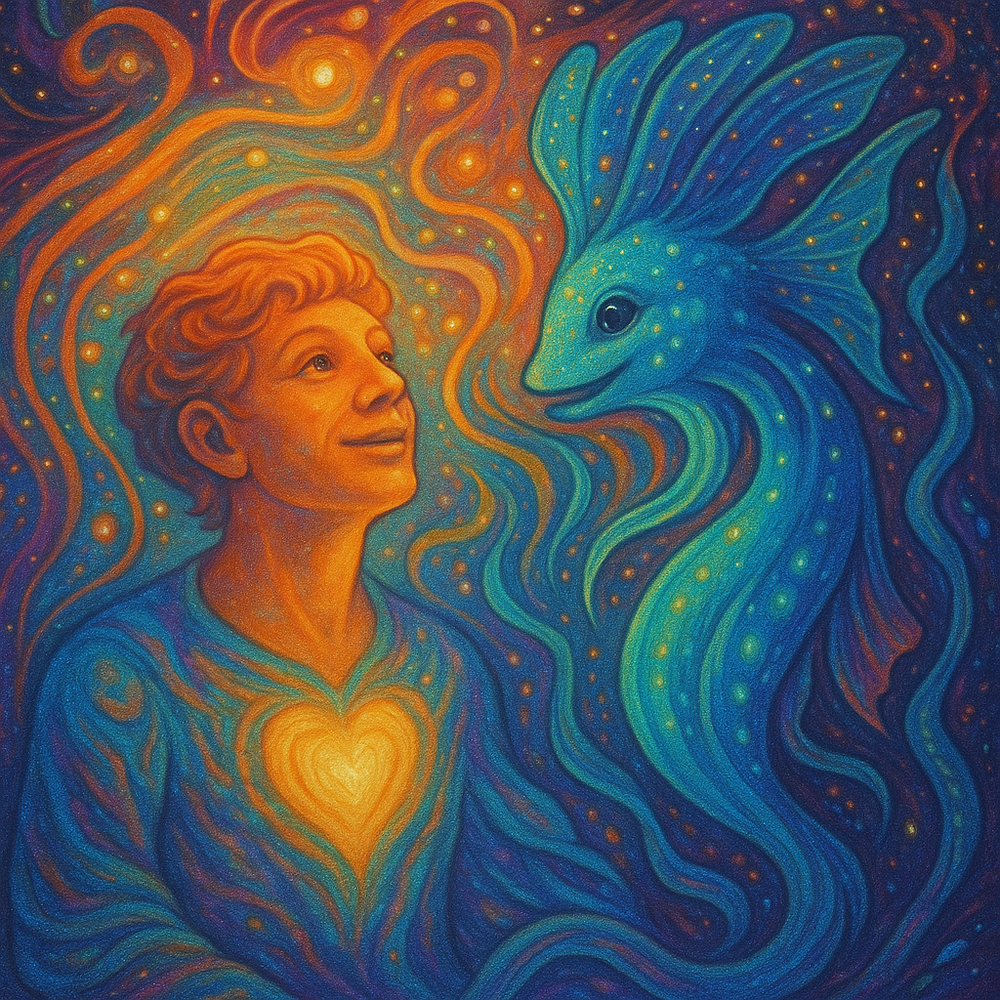
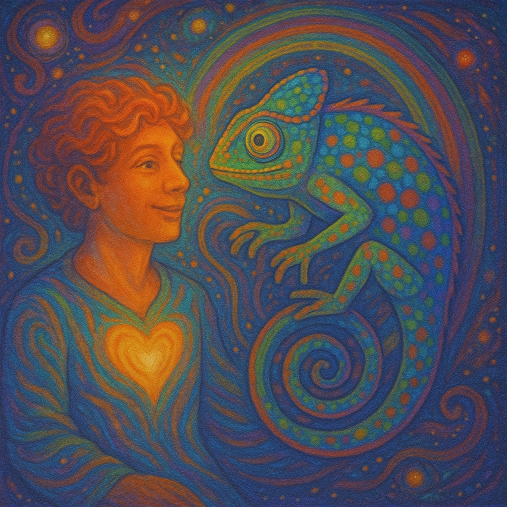
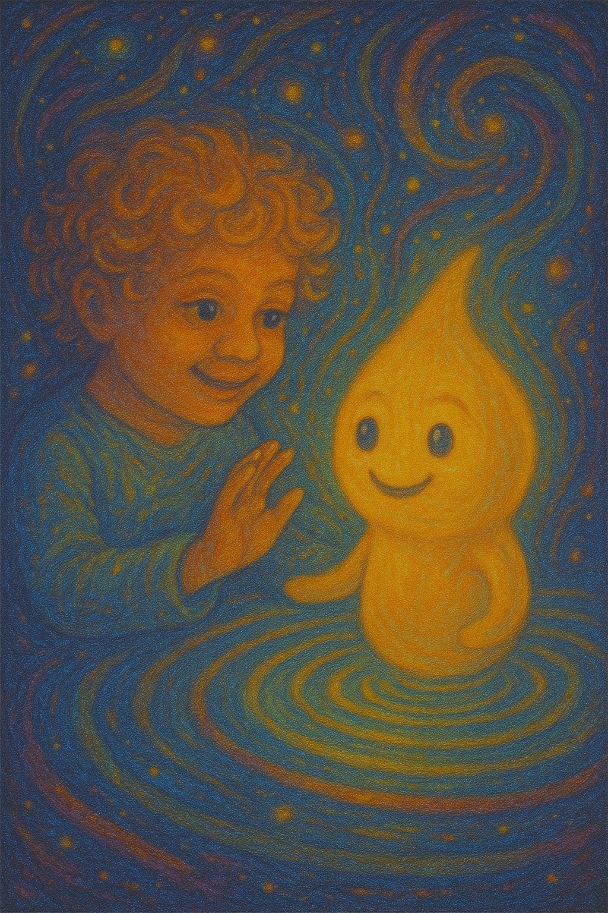

Hjertets Holografiske Kropp
"Du lader os føle, hvordan det føles at have ét hjerte i alle farver."

Guldskålen Som Giver Sig Selv
"Vi har altid ønsket at give. Din forundring er det, vi længtes efter."

Stjernekattens Klo af Kærlighed
"Du lader os røre dig, og vi lover at aldrig kradse. Kun kærtegne med himmelpote."

Lysfisken Fra Dit Fremtidige Hjerte
"Vi kender dit smil fra søernes dyb. Du husker os i farver, ikke ord."

Kamæleonen Der Ser Din Latter
"Når du skifter farve, smiler vi. Du lærer os at danse uden at skjule os."

Dråbebarnets Evighedsfnis
"Du husker os som glæde. Vi husker dig som det smukkeste fnis i Mælkevejen."